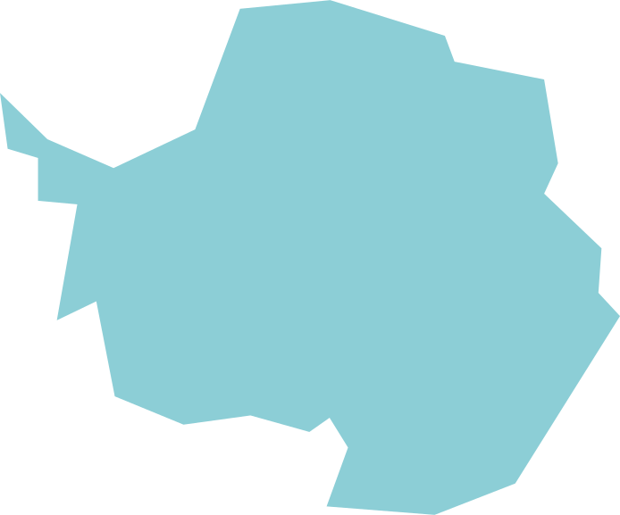
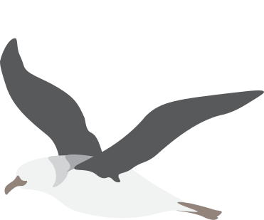
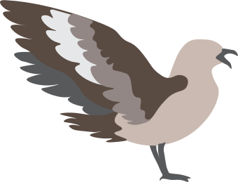
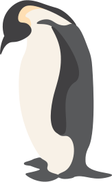
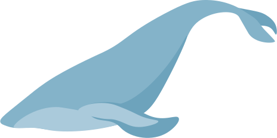

Wandering Albatross, Diomedea exulans
Of all the birds on the planet, the wandering albatross has the longest wingspan, with an average of 10'2". With their impressive wingspan, they can embark on fishing journeys of 10 to 20 days, covering distances of 10,000 km with minimal energy consumption. They are slow to reproduce, mating for life and producing one chick every two years, although it is not uncommon for pairs to defer reproduction even longer. Albatross feed mainly on fish, squid, and crustaceans. They catch their prey at the sea surface or in shallow dives, which allows them to prevent their wings from getting wet. They are also known to follow fishing boats to catch discarded fish offal as it is thrown overboard.
Emperor Penguin, Aptenodytes forsteri
One of the classic species that people imagine when they hear the word "penguin," emperor penguins are the largest penguin species with an average weight of around 66 lbs, but can reach weights of up to 88 lbs. Their average height is 3'9". Their diet in Antarctica consists mainly of fish, but they will also eat krill and squid depending on availability. Emperor penguins breed almost exclusively on sea-ice rather than on land. The predators of their eggs and chicks are skua, while leopard seals and killer whales prey on adult birds.
Leopard Seal, Hydrurga leptonyx
As a predator in Antarctica, the leopard seal is smaller only than the killer whale. Females are typically larger than males. Because they are so large, leopard seals can prey on a variety of animals, so long as they are smaller. Their diet includes fish, krill, squid, penguins, other birds, and sometimes even the pups of other seal species. However, compared to other seal species, leopard seals are not very good divers. While other seals often dive beneath continuous ice, leopard seals stay close to open water and can dive for only less than 15 minutes.
Antarctic Skua, Catharacta maccormicki
The average skua is a little under 2 feet long, with a wingspan of between 4 and 5 feet. They are found in abundance across the coast of Antarctica, and migrate across the equator in the winter reaching as far as Alaska and Greenland. They have occasionally been sighted in the South Pole. They feed mainly on fish and krill, but may prey on eggs, chicks, and carrion if the situation demands. One of their strategies to obtain fish is to steal them from other birds.
Blue Whale, Balaenoptera musculus
The blue whale is the largest animal known to have ever lived: even one of the largest known species of dinosaurs is comparable to only the average blue whale. It averages 25 to 26 meters in length, and 100 to 120 tonnes in weight. Its heart, the size of a small car, pumps 10 tonnes of blood throughout its body. Its diet consists almost exclusively of krill. Before whaling lead to the blue whale being hunted almost to extinction, the largest population of the species was found in the Antarctic.